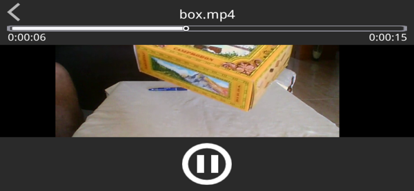
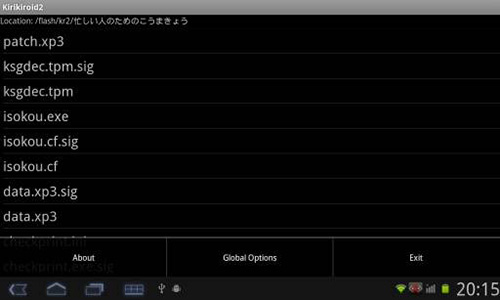

XP3Player 到底值不值得掏钱？——一篇给 GalGame 玩家算的时间账
把 XP3Player 放到 iOS 跑 GalGame 的真实场景里，按轻度、主力、重度三档使用强度算账：省的时间值不值那几十块买断价。
XP3Player 到底值不值得掏钱？这问题我纠结了差不多一个月才下的单。
如果你是 iOS 用户又想玩 GalGame，应该能理解那种"有得用就不错了还挑什么"的心态——毕竟 iOS 上能跑 KiriKiri 引擎 GalGame 的工具一只手数得过来。但"有得用"和"值得掏钱"不是一回事，我把这半个月用下来的真实时间账摊开给你，自己对号入座。
先理清楚：它到底卖什么
XP3Player官网上描述得很清楚——XP3Player 本质上是一个 iOS 平台的 KiriKiri 引擎运行器。它不生产 GalGame，也不帮你找资源，它做的事情很具体：把你从网上搞到的、KiriKiri 引擎开发的 GalGame 文件夹（里面有 data.xp3 那种），在 iPhone 或 iPad 上跑起来。
配套的东西包括：内置 ZIP/RAR 解压、游戏内全屏画面适配、ProMotion 高刷新率支持、蓝牙音频路由——都是围绕"把 PC 上的 GalGame 搬到 iOS 上无缝运行"这件事做的。从官方下载或 App Store 拿到安装包即可使用，定价属于 iOS 工具类 App 的常规区间，买断制，没有内购。

三类用户的时间账
我把 GalGame 玩家按使用强度分成三档，每档算一笔账。价格统一按 iOS 工具类 App 常见的买断价算，重点看"省的时间值不值"。
轻度用户：一个月玩一两部
这档人的典型场景是：偶尔刷到一部感兴趣的 GalGame，下载了想在 iPad 上躺床上玩。
不用 XP3Player 的代价：你得在电脑上先解压（RAR5 还解压不了得找别的工具），确认有没有 data.xp3 判断能不能跑，然后用 iTunes 或文件 App 传到 iOS，中途文件结构不对还得反复调。保守估计一部游戏从"下载完压缩包"到"iPad 上能打开"要折腾 20~30 分钟。
用了 XP3Player 之后：压缩包直接扔进文档目录，长按解压，扫一眼有没有 data.xp3，点一下游戏文件夹就启动了。同样的流程压缩到 5 分钟以内。
算账：一部省 20 分钟，一个月两部省 40 分钟。买断价按 30 块算，等于花 30 块买 40 分钟+后续每次都不用再折腾的省心。如果你觉得"20 分钟我忍忍就过了"，那这钱确实可以不花。
主力用户：同时存着五六部在玩
这档人是真的在玩 GalGame，手机里长期放着三五部，通勤、午休、睡前都来一段。
不用 XP3Player 的代价：每部游戏都要走一遍解压、传输、验文件的流程。更烦的是如果用别的非专用工具跑 KiriKiri 游戏，画面适配经常出问题——要么被灵动岛挡掉顶部，要么拉伸变形，要么 iPad Pro 上刷新率锁死 60Hz 看着卡。蓝牙音频路由在老版本 iOS 上还经常连好了但声音从扬声器出来，得强制退出重开。
用了 XP3Player 之后：文件扔进文档目录一键解压——它自己认 ZIP/RAR/XP3 三种格式，不用你手动挑工具。画面模式长按呼出菜单就能切，"保持宽高比"和"居中显示"切一下就好，灵动岛安全区 1.3.12 版本之后也不再挡画面。ProMotion 在对话快进和过场动画上确实丝滑不少，蓝牙连接一次之后路由也稳定。

算账：五六部游戏的初始化折腾时间加起来能省两三个小时，后续每次切游戏、调画面的零碎时间一天省个几分钟也不少。更重要的是"不卡壳"——非专用工具跑 KiriKiri 游戏出问题了网上搜解决方案的时间，比你花在游戏本身上的时间还多。对主力用户来说，这钱省下来的不是单次时间，而是"再也不用为游戏能不能跑通焦虑"的心理成本。
重度用户：几十部游戏轮换玩，还捣鼓汉化补丁
这档人在 GalGame 圈子里应该叫"囤硬盘玩家"——收藏了几十部 KiriKiri 作品，有的还自己打汉化补丁、改参数。
不用 XP3Player 的代价：你需要一台 Windows 设备装完整的 KiriKiri 运行环境（TVP/吉里吉里 + 各种依赖），或者用 Android 上的 JoiPlay。iOS 上没有 JoiPlay，不用 XP3Player 等于放弃 iOS 这个平台。汉化补丁里经常有 patch.xp3 文件，XP3Player 能自动识别并加载，这个行为我也是翻XP3Player文档才确认的，别的工具可能不行。分卷 RAR 和带密码压缩包 XP3Player 解不了，但重度用户本来也会先在电脑上处理好再导入。
用了 XP3Player 之后：iOS 设备从"只能拿来看文档"变成了真正的 GalGame 便携设备。data.xp3 + patch.xp3 的双文件结构它原生支持，补丁覆盖原版资源这件事你完全不用操心。画面适配的三种模式在不同年代的游戏间切换——4:3 的老作品选"保持宽高比"两边留黑边画质不受损，16:9 的新作品选"拉伸至全屏"填满 iPad 屏幕。外接显示器或 AirPlay 到 Apple TV 也自动调整分辨率，不用手动改。
算账：重度用户算的不是单次时间账，是"能不能多一个平台玩"的选择题。iOS 在 GalGame 玩家圈里是被公认的"弱势平台"——之前几乎没有像样的 KiriKiri 运行器。XP3Player 填补的就是这个空白。如果你有 iPad Pro，想在床上或沙发上玩 GalGame，这钱相当于买了一个 iOS 上唯一能用的入口。对这档人来说，它值不值已经不是时间账能算的了——它是刚需。
不付这笔钱有什么别的路
iOS 上跑 GalGame 确实还有别的方式，但都有硬伤：
- 用 Android 设备 + JoiPlay：这是目前 iOS 用户最现实的替代方案。但你需要一台 Android 设备，或者在 iOS 上搞个 Android 模拟器（性能打折还折腾）。如果你已经有安卓机，那确实不用在 iOS 上多花一份钱。
- Windows 远程桌面：用 iPad 远程连家里的 Windows 电脑跑 GalGame。延迟、分辨率、交互手感都不怎么样，适合偶尔应急，长期用折磨人。
- 等 Ren'Py 游戏：Ren'Py 引擎的 GalGame 在 iOS 上有官方支持的模拟器。但 KiriKiri 引擎的作品在 GalGame 市场里占比远大于 Ren'Py，你错过的是大部分作品。
还有一种更极端的思路——不买 iOS 设备。如果你就是 GalGame 重度玩家，主力设备选 Android 或 Windows，那这笔钱完全可以省。但已经有 iPhone/iPad 的用户为此换平台的成本远高于买一个工具 App。
结论：三秒对号入座
- 闭眼付：主力和重度用户，尤其是已经有 iPad Pro 想利用 ProMotion 屏幕优势的、手上存了一堆 KiriKiri 作品的。几十块买断换来一个稳定的 iOS 运行环境，这笔账不用算。
- 再等等：轻度用户，一个月玩不了一部，或者已经有 Android 设备在跑 JoiPlay 的。花那几十块省的时间不如存着等打折，或者直接用电脑玩。
- 永远不用付：GalGame 只是偶尔消遣、或者只玩 Ren'Py 引擎作品的。iOS 上的 Ren'Py 模拟器是免费的，完全够用。
最后提醒一下：XP3Player 不是万能的。RAR5 格式解压不了，带密码的压缩包处理不了，分卷压缩也不支持——这些你得在电脑上先处理好再导入。而且它只认 KiriKiri 引擎的 .xp3 文件，Unity、RPG Maker、Ren'Py 都不覆盖。但如果你确认自己玩的就是 KiriKiri 这一类、想要 iOS 上最省心的运行方案——它就是目前能买到的最好选择。它的资料在 GitHub、Gitee、GitCode 三处都有留存，怕某个仓库访问不畅的可以翻其他的。